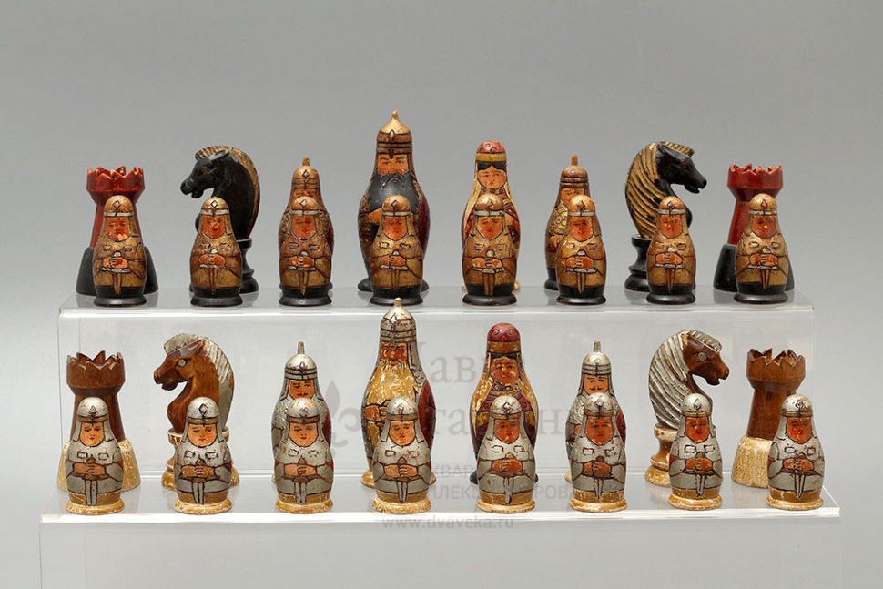

Откуда пришли шахматы

Предшественница шахмат - игра чатуранга - появилась в Индии примерно в VI веке. Затем она попала в Персию, на Ближний Восток, а потом и в Европу. Современные правила сложились в конце XV века.
Подробнее можно прочитать в Википедии.
Разделы
Известные чемпионы мира
| Чемпион | Страна | Годы чемпионства |
|---|---|---|
| Вильгельм Стейниц | Австрия | 1886-1894 |
| Хосе Рауль Капабланка | Куба | 1921-1927 |
| Анатолий Карпов | СССР | 1975-1985 |
| Гарри Каспаров | СССР | 1985-2000 |
| Магнус Карлсен | Норвегия | 2013-2023 |
Интересные факты
- Слово «шахматы» пришло из персидского «шах мат» - «правитель беспомощен».
- Количество возможных партий даже не сосчитать.
- В 1997 году компьютер Deep Blue обыграл Каспарова.